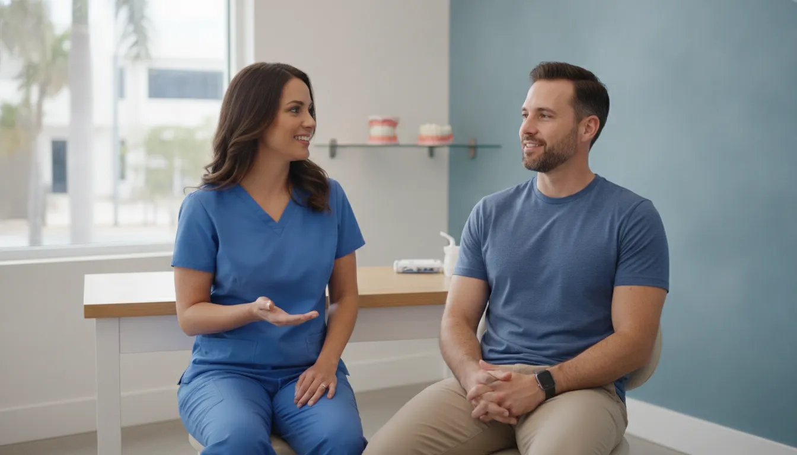

Veneers vs Crowns: Which Option Fits Your Tooth?

Choosing between a veneer and a crown is not simply a cosmetic decision. The right direction depends on how much of the tooth is healthy, whether it needs protection or primarily an appearance change, and what an examination shows.
Contact Aventura Dental Center through the online form to discuss your concerns and arrange an evaluation in Aventura.
In general, veneers vs crowns comes down to coverage and purpose. A veneer is a custom shell placed over the front surface for cosmetic concerns. A crown covers the entire tooth to restore or protect a tooth that is damaged, decayed, weak, or worn.
The comparison becomes clearer when you look at what each restoration is designed to do and how much tooth structure it covers.
What Is the Difference Between Veneers vs Crowns?
The short answer is that veneers are usually cosmetic shells placed over the front surface of a tooth, while crowns are tooth-shaped restorations that fit over the entire tooth. The difference matters because a veneer primarily changes appearance. A crown is generally used to restore, protect, or reinforce a tooth that is damaged, decayed, weak, or worn.
According to the Cleveland Clinic overview of dental veneers, a veneer covers the visible front surface rather than surrounding the tooth. It may improve the look of a tooth, but it does not necessarily strengthen or repair the tooth underneath. A dental crown, as described by Cleveland Clinic, covers the entire tooth. Some enamel usually must be removed so the crown can fit properly.
| Veneers | Crowns | What the distinction means |
|---|---|---|
| Custom shell over the front surface. | Tooth-shaped cap over the entire tooth. | Coverage is limited versus comprehensive. |
| Primarily cosmetic intent. | Primarily restorative and protective intent. | The tooth's condition helps guide the choice. |
| Can improve the visible shape or color. | Can restore a decayed, broken, weak, or worn tooth. | Appearance alone does not determine treatment. |
| May be made from porcelain or tooth-colored composite | May be made from materials such as porcelain, resin, or metal | Material selection depends on the tooth and treatment goals. |
In practical terms, a veneer may be considered when the main concern is the visible front of an otherwise suitable tooth. A crown may be more appropriate when decay, a crack, substantial wear, or weakness has affected the tooth's structure. Crowns can also cover root-canal-treated teeth and dental implants. The right restoration depends on the tooth's condition, how much healthy structure remains, and the patient's goals. An examination is necessary to distinguish a cosmetic concern from a problem that needs protection or repair.
When Are Veneers Usually Considered?
Veneers are usually considered when the main concern is the visible appearance of one or more teeth. A veneer is a custom-made shell that fits over the front surface. So it may help conceal concerns such as chips, small gaps, discoloration, teeth that look too small, or an unusual shape. These are cosmetic goals, not a substitute for restoring a tooth that needs structural protection.
Material choice is part of the conversation. Veneers may be made from porcelain or tooth-colored composite, and each material can involve different considerations for appearance, preparation, and maintenance. If you want to understand the available dental veneer options and preparation, a treatment-specific overview can help you prepare questions for your visit.
Healthy supporting teeth and gums matter before cosmetic treatment is planned. Extensive cavities, active gum disease, or other serious oral health concerns should be addressed first. Veneers do not necessarily strengthen or repair teeth, so covering a visible imperfection does not resolve decay, weakness, or another underlying problem.
That is why an exam remains important even when the goal seems purely cosmetic. A dentist can review your concerns, examine the teeth and gums, and determine whether imaging is needed. The condition of the tooth, available enamel, bite, existing restorations, and your appearance goals may all affect the options. There is no single set of features that makes veneers appropriate for everyone. An evaluation helps distinguish a cosmetic concern that may be addressed with a veneer from a tooth that needs a different form of care.
When Might a Crown Be the More Appropriate Option?
A crown may be considered when a tooth needs protection or structural support, not simply a cosmetic change. A dental crown is a tooth-shaped cap that restores a decayed, broken, weak, or worn tooth. Unlike a veneer, which covers only the front surface, a crown fits over the entire tooth. This broader coverage can help reinforce a tooth when its remaining structure cannot reliably support a more limited cosmetic restoration.
When decay or weakness affects the tooth
Extensive decay can leave a tooth weakened, and a crown may be part of the plan after the dentist evaluates how much healthy structure remains. Mayo Clinic notes that a crown can help protect the soundness of a decayed tooth and lower the risk of fracture. The appropriate treatment still depends on whether the tooth is restorable, how much damage is present, and whether other concerns need attention first.
When a tooth is cracked, worn, or heavily restored
Crowns may also be used to support cracked teeth or restore teeth that are worn down or broken. They can cover a tooth after root canal treatment and may be placed over a dental implant. These are restorative purposes: the goal is to protect or replace the visible portion of a tooth and help address its structural needs. A crown can also be made with materials such as porcelain, resin, or metal. With the choice guided by the tooth's location, function, appearance goals, and oral health needs.
This is different from choosing a veneer primarily to change the appearance of a tooth. A veneer may improve a cosmetic concern, but it does not necessarily strengthen or repair the tooth underneath. If active decay, a crack, significant wear, or another structural problem is present, cosmetic enhancement alone may not address the underlying issue.
At Aventura Dental Center, crown planning is based on examination findings. A visit may include a review of your dental history, an oral examination, necessary imaging, and a discussion of options. You can learn more about dental crown treatment in Aventura, but an exam is needed to determine whether a crown, veneer, another restoration, or no immediate treatment is appropriate for a particular tooth.
How Do Preparation and Tooth Coverage Differ?
The evaluation comes before deciding whether a veneer or crown fits a particular tooth. A dentist may ask about pain or sensitivity, examine the tooth and surrounding tissues, and use dental instruments or X-rays when needed. This helps identify decay, cracks, existing restorations, and whether the tooth is strong enough for the proposed restoration. Imaging is based on the findings, rather than being automatic at every visit. Mayo Clinic describes this type of examination as part of evaluating tooth decay and other concerns.
Coverage is one of the clearest differences in the veneers vs crowns discussion. A veneer is a thin, custom-made shell placed over the front surface of a tooth. A crown is shaped like a tooth and fits over the entire tooth. Because a crown must fit securely, some enamel is removed during preparation. The amount and location of preparation depend on the tooth, the restoration selected, and the clinical findings. A veneer is not simply a smaller crown, and neither option should be selected from appearance alone.
For a crown, Aventura Dental Center describes a conventional workflow that can include preparing the tooth. Taking an impression, placing a temporary restoration, and later fitting the final crown.
The practice also notes that a same-visit CEREC crown may be an option in selected cases, but this is not guaranteed. The appropriate pathway depends on the examination and the tooth's condition.
During final fitting, the dentist checks how the restoration sits and how it relates to the surrounding teeth and bite. The plan may need to account for active damage, restorability, and the amount of healthy tooth structure that remains. For more background on how dental crowns protect teeth, see the practice's crown guide. A conversation about preparation should therefore focus on the needs of the individual tooth, not a one-size-fits-all comparison.
How Do Veneers vs Crowns Differ in Durability and Care?
Appearance is an important part of the decision, but it is not the only one. Veneers are thin, custom-made shells placed on the front surface of a tooth. So they are generally considered for cosmetic concerns such as discoloration, small chips, gaps, or an uneven shape. They may be made from porcelain or tooth-colored composite. You can learn more about porcelain and composite veneer differences before discussing which material may fit your goals.
A crown has a different job. It covers the entire tooth and is used to restore a tooth that is decayed, broken, weak, or worn. Crowns can also cover root-canal-treated teeth or dental implants. Because a crown surrounds the tooth, it may provide protection when there is not enough healthy structure for a primarily cosmetic covering. Cleveland Clinic notes that crown material choices can include resin, metal, and porcelain, and that the right option depends on personal preferences and individual oral health needs.
Material affects the balance between appearance and function. Porcelain can be selected when a natural-looking result is an important consideration. Porcelain-fused-to-metal crowns combine a porcelain appearance with a metal foundation, although the porcelain coating can chip over time. A dentist also considers where the tooth sits, how much chewing force it receives. How much sound tooth structure remains, and whether active decay or other oral-health concerns need attention first.
Care is practical for either restoration. Continue routine brushing, flossing, and dental checkups, and tell your dentist about sensitivity, looseness, a crack, or a change in how your teeth meet. Avoid treating a restoration as indestructible, especially if you regularly bite hard objects or clench and grind. The appropriate maintenance plan depends on the restoration and your oral health.
For general education, Cleveland Clinic states that crowns last between five and 15 years with proper care: dental crown information. That range is not a prediction for any individual tooth. Veneer and crown durability can vary with material, preparation, bite forces, hygiene, and the condition of the supporting tooth. An examination is the best way to weigh appearance, protection, and long-term care for your situation.
How Should Aventura Patients Decide Between Them?
When comparing veneers vs crowns, start with oral health rather than appearance. Active decay, gum disease, pain, sensitivity, cracks, or other damage may need attention before cosmetic planning. A dentist may ask about symptoms, examine the teeth and gums, and use imaging when needed. Regular checkups can also identify problems before they become more serious. Mayo Clinic explains how decay is evaluated, but an online comparison cannot determine what is happening inside one specific tooth.
1. Consider how much healthy tooth structure remains
A veneer covers the front surface and is generally considered for appearance-related concerns. A crown covers the entire tooth and may be selected when a tooth is decayed, broken, weak, worn, or otherwise in need of broader restoration. The amount of sound tooth structure, the tooth's restorability, and the location of the problem all affect the options. A cosmetic goal does not replace the need to protect a tooth that is structurally compromised.
2. Clarify the purpose of treatment
Ask whether the primary goal is to change the appearance of a reasonably healthy tooth or to restore and protect a damaged one. Veneers may address concerns such as discoloration, small chips, gaps, or tooth shape, while crowns can support a weakened or cracked tooth and cover a root-canal-treated tooth or implant. These categories can overlap, so the purpose should be discussed tooth by tooth.
3. Discuss appearance, habits, and long-term care
Appearance matters, but so do biting forces and daily habits. Tell the clinician about clenching, grinding, nail biting, sports, or anything else that places unusual stress on the teeth. Material choices and preparation should reflect both your smile goals and your oral health needs. The right choice is not simply the option that looks most natural in a photograph.
For patients in Aventura and nearby communities, an initial visit at the Aventura office may include a health history, examination, necessary imaging, and a personalized discussion. Individualized evaluation is the most reliable way to decide whether a veneer, crown, or another approach fits the condition and purpose of a particular tooth.
Contact Aventura Dental Center through the online form with questions about your options.
Frequently Asked Questions
Can a tooth still rot under a crown?
Yes. A crown covers the tooth, but it does not make the surrounding tooth structure immune to decay. Good brushing, cleaning around the crown, and regular dental checkups help identify problems early. A dentist may evaluate symptoms, examine the tooth, and use X-rays when needed. Mayo Clinic explains how tooth decay is evaluated.
What might veneers look like after 10 years?
There is no single appearance that applies to every patient after 10 years. Veneers are thin shells placed on the front surfaces of teeth. And their long-term appearance depends on the material, oral habits, care, and the condition of the supporting teeth. An examination can help set realistic expectations rather than promise a specific result.
Can I bite an apple with veneers?
Ask your dentist how to use and protect your specific veneers. Veneers are cosmetic coverings for the front surfaces, not a substitute for evaluating a weakened or damaged tooth. Avoid using treated teeth to bite hard objects, and follow the care instructions provided for your restoration.
How much do veneers typically cost?
Fees vary by case. The total may depend on the number of teeth, the material selected, preparation, and other findings from the examination. No exact fee is provided here because a meaningful estimate requires individualized treatment planning.
Contact Us About Veneers or Crowns
Veneers and crowns serve different purposes, and an individualized dental evaluation can help clarify which option may fit your tooth, oral health, and goals. If you are considering treatment in Aventura, contact Aventura Dental Center through the online contact form to discuss your questions and next steps with the dental team.